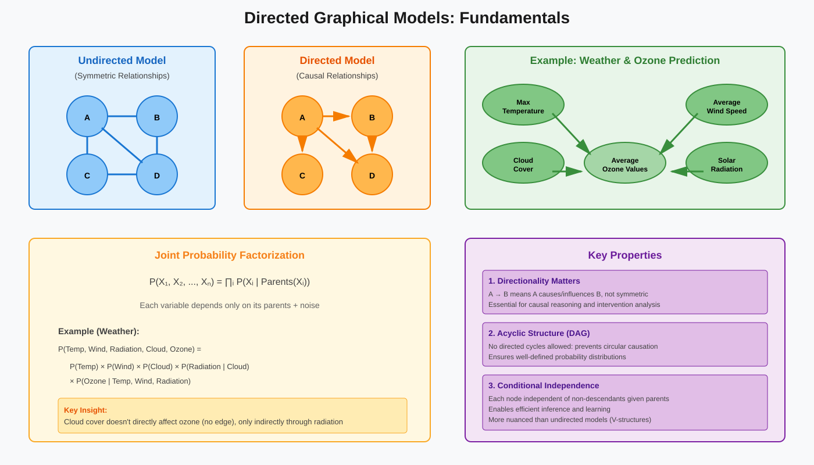
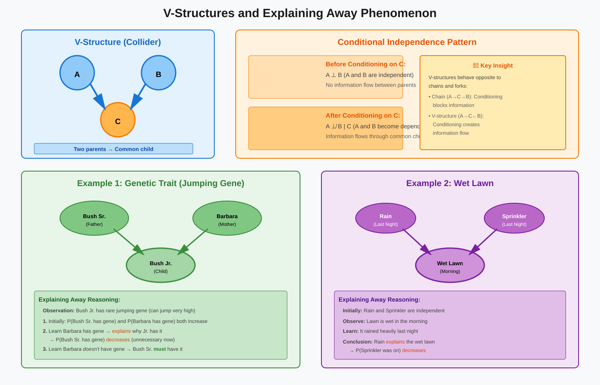
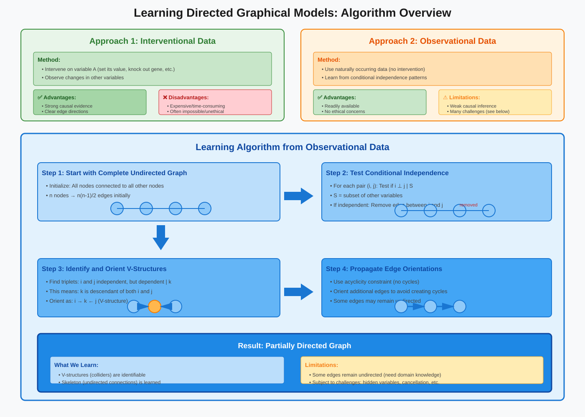
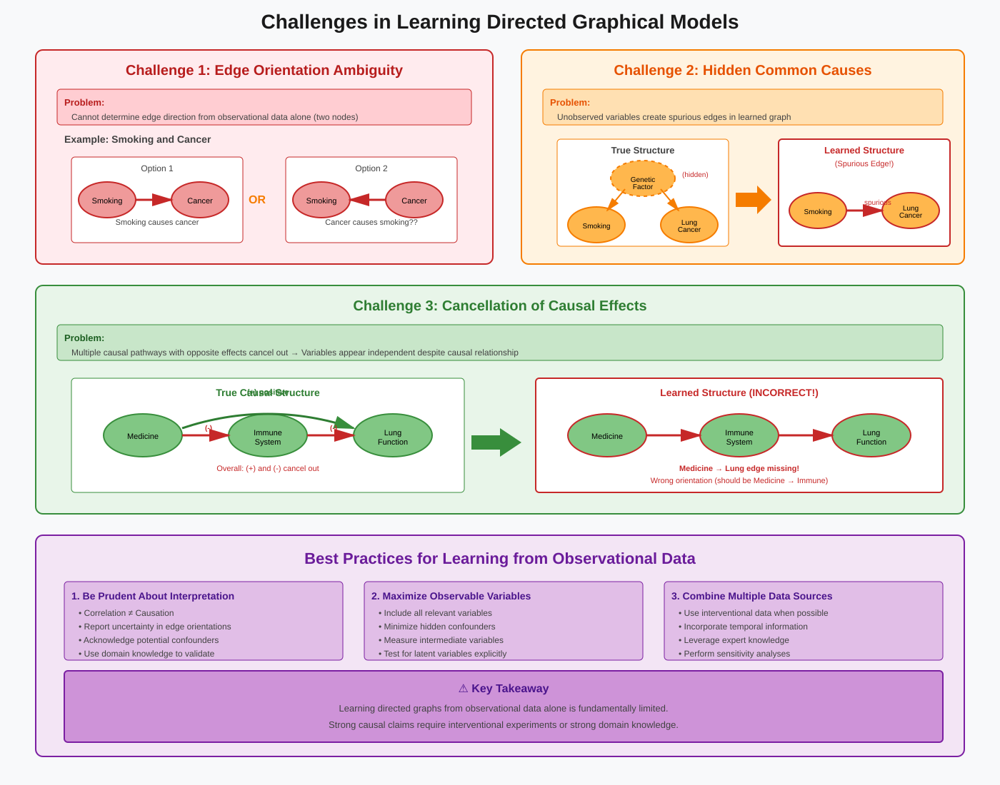

Directed Graphical Models
📑 Quick Navigation
- Introduction
- Fundamental Concepts
- Conditional Independence in Directed Graphs
- V-Structures and Explaining Away
- Learning Directed Graphical Models
- Challenges in Learning
- Markov Properties
- Practical Applications
- References & Further Reading
🎯 Introduction
Directed Graphical Models (also known as Bayesian Networks or Belief Networks) are powerful probabilistic models that represent causal and conditional dependencies between random variables using directed acyclic graphs (DAGs). Unlike undirected graphical models where edges represent symmetric relationships, directed models capture asymmetric cause-effect relationships that are crucial in many real-world applications.
Key Characteristics:
- Nodes: Represent random variables
- Directed Edges: Represent direct dependencies or causal influences
- Acyclic Structure: No directed cycles, ensuring well-defined probability distributions
- Factorization: Joint distribution factors according to parent-child relationships

Why Directed Models?
While friendship networks naturally fit undirected graphs (friendship is bidirectional), many real-world systems involve asymmetric relationships where direction matters:
- Gene regulatory networks: Gene A up-regulates or down-regulates Gene B
- Weather systems: Temperature, radiation, and wind affect ozone levels
- Medical diagnosis: Diseases cause symptoms, not vice versa
- Causal inference: Understanding intervention effects requires directed relationships
🏗️ Fundamental Concepts
Basic Structure
A directed graphical model consists of:
Components:
- Variables: Each node represents a random variable (discrete or continuous)
- Parents: Nodes with edges pointing into a given node
- Children: Nodes that a given node points to
- Descendants: All nodes reachable by following directed paths
- Ancestors: All nodes from which a given node is reachable
Factorization Property:
The joint probability distribution over all variables factorizes as:
P(X₁, X₂, ..., Xₙ) = ∏ᵢ P(Xᵢ | Parents(Xᵢ))
This means each variable depends only on its parents plus some noise, making the model both intuitive and computationally tractable.
Example: Weather and Ozone
Consider a directed graphical model for predicting ozone levels in Boston:
Variables:
- Maximum Temperature: Daily maximum temperature
- Average Wind Speed: Daily average wind speed
- Solar Radiation: Amount of daily solar radiation
- Cloud Cover: Average daily cloud cover
- Ozone Values: Average daily ozone concentration
Causal Relationships:
- Radiation → Ozone: UV rays create ozone from precursors
- Temperature → Ozone: Heat waves increase ozone (plants absorb less)
- Wind Speed → Ozone: High winds disperse ozone precursors
- Cloud Cover → Radiation: Clouds block solar radiation (indirect effect on ozone)
The model represents our belief that ozone values are a function of radiation, wind speed, and temperature plus noise. Cloud cover affects ozone only indirectly through radiation.
Conditional Independence:
Knowledge about cloud cover does not increase our ability to predict ozone values if we already know radiation, temperature, and wind speed.
🔄 Conditional Independence in Directed Graphs
Local Directed Markov Property
The fundamental property states:
Definition:
Each node is conditionally independent of all its non-descendants given its parents.
Xᵢ ⊥ NonDescendants(Xᵢ) | Parents(Xᵢ)
This property allows us to read conditional independence relations directly from the graph structure.
Example: Bush Family Tree
Consider a directed graph representing genetic inheritance in a family tree:
Nodes: Individuals in the family
Edges: Parent → Child relationships
Key Independence Statements:
- George W. Bush's genome is independent of his grandfather's genome given his parents' genomes
- Even conditioning only on his father's genome is sufficient for independence from his grandfather
- Siblings (George W. and Jeb Bush) are dependent without conditioning but become independent given their parents' genomes
Reasoning:
Knowing Jeff's genome doesn't provide additional information about George W.'s genome beyond what we already know from their parents' genomes.
Conditioning Effects
Unlike undirected models, conditioning in directed graphs has nuanced effects:
Case 1: Conditioning Makes Independent Variables Independent
- Siblings are dependent (share genetic material)
- Conditioning on parents makes them independent
Case 2: Conditioning Makes Independent Variables Dependent
- Parents (Bush Sr. and Barbara) are initially independent (unrelated)
- Conditioning on their child makes them dependent (explaining away effect)
This asymmetry is crucial for understanding directed graphical models.
🔀 V-Structures and Explaining Away
V-Structure Definition
A V-structure (also called a collider) occurs when two nodes have edges directed into a common child node.
Structure:
A B
\\ /
\\ /
\\ /
C
Nodes A and B both point to C, creating a "V" shape.

The Explaining Away Phenomenon
Key Insight:
Conditioning on a descendant makes its independent parents become dependent.
Example 1: Genetic Trait
Scenario: Bush Jr. has a rare genetic trait (e.g., ability to jump very high)
Reasoning:
- Bush Jr. must have gotten the trait from at least one parent
- Before observing Barbara's genome: If we know Jr. has the trait, probability increases that Bush Sr. has it
- After learning Barbara has the trait: This explains why Jr. has it, making it unnecessary for Bush Sr. to have it
- After learning Barbara doesn't have the trait: Bush Sr. definitely must have it
Dependence Pattern:
Bush Sr. and Barbara are independent initially, but become dependent when conditioned on Bush Jr. having the trait.
Example 2: Wet Lawn
Variables:
- Rain: Whether it rained last night (binary)
- Sprinkler: Whether sprinkler was on (binary)
- Wet Lawn: Whether lawn is wet in morning (binary)
Graph Structure:
Rain → Wet Lawn ← Sprinkler
Conditional Independence:
- Without conditioning: Rain and Sprinkler are independent events
- Conditioning on Wet Lawn: They become dependent
Reasoning:
If we know the lawn is wet and learn it rained heavily, the probability that the sprinkler was also on decreases (the rain explains the wet lawn).
General Rule
V-Structure Principle:
Two nodes with a common child are:
- Independent without conditioning on any descendant
- Dependent when conditioning on the child or any of its descendants
This is opposite to the typical pattern and is unique to directed models.
📊 Learning Directed Graphical Models
Learning Approaches
There are two main approaches to learning the structure of directed graphical models:
1. Interventional Data (Experimental)
- Perform controlled experiments by manipulating variables
- Observe downstream effects
- Provides strong causal evidence
- Often expensive or impossible to obtain
2. Observational Data (Observational)
- Use naturally occurring data without intervention
- Learn from conditional independence patterns
- More readily available but provides weaker causal evidence
- Requires careful interpretation

Learning from Conditional Independence
Algorithm Steps:
Step 1: Start with Complete Undirected Graph
- Begin with all nodes connected to all other nodes
Step 2: Remove Edges Based on Independence
- Test for conditional independence between all pairs of nodes
- If nodes i and j are conditionally independent given some subset S of remaining nodes, remove edge between i and j
- Result: Undirected graph skeleton
Step 3: Orient Edges Using V-Structures
- Find pairs of nodes that are independent but become dependent when conditioning on a node between them
- Since conditioning can only make nodes dependent if the conditioned variable is a descendant, this identifies V-structures
- Direct edges accordingly: A → C ← B
Step 4: Propagate Orientations
- Use acyclicity constraint to orient additional edges
- Some edges may remain unoriented
Gene Knockout Experiments
Application to Gene Regulatory Networks:
Method:
- Knock out (make inoperative) a specific gene A
- Measure expression changes in all other genes
- If gene B's expression changes, B must be downstream from A
Advantages:
- Directly reveals causal relationships
- Can identify downstream pathways
Limitations:
- Laborious for large networks (humans have ~20,000 genes)
- May have off-target effects
- Cannot identify immediate vs. indirect connections
Learning from Observational Data
When Interventions Are Impossible:
- Weather systems: Cannot manipulate atmospheric variables
- Human health: Ethical constraints prevent many experiments
- Historical data: Past events cannot be manipulated
Approach:
Use conditional independence tests on observational data to infer graph structure, but interpret results cautiously due to limitations.
⚠️ Challenges in Learning
Learning directed graphical models from observational data faces several fundamental challenges:

Challenge 1: Edge Orientation Ambiguity
Problem:
From observational data alone, it's impossible to determine edge direction for some connections.
Example: Smoking and Cancer
Consider two nodes: Smoking and Cancer
Possible Models:
- Smoking → Cancer (smoking causes cancer)
- Smoking ← Cancer (cancer causes smoking)
- Both are consistent with observational correlation data
Why It's Undecidable:
- Both directions produce the same conditional independence patterns
- Observational data shows correlation, not causation
- Need interventional experiments to establish direction
Solution:
- Perform interventions (assign smoking vs. non-smoking groups)
- Use domain knowledge and temporal information
- Accept that some edges remain undirected
Challenge 2: Hidden Common Causes
Problem:
Unobserved (latent) variables can create spurious edges in the learned graph.
Example: Smoking and Lung Cancer Debate
Historical Controversy:
- Observation: Smoking and lung cancer are correlated
- Causal hypothesis: Smoking → Lung Cancer
- Alternative hypothesis: Hidden genetic factor → Both Smoking and Lung Cancer
Impact on Learning:
- If genetic factor is unobserved, the algorithm sees correlation between smoking and cancer
- Might incorrectly add direct edge Smoking → Cancer
- True structure has hidden common cause
General Pattern:
Hidden Cause
| \\
| \\
↓ ↓
Variable A Variable B
Appears as: Variable A ← → Variable B (spurious edge)
Mitigation Strategies:
- Include as many relevant variables as possible
- Use domain knowledge to identify potential confounders
- Be prudent about causal interpretation
- Perform sensitivity analysis
Challenge 3: Cancellation of Causal Effects
Problem:
Multiple causal pathways with opposite effects can cancel out, making variables appear independent when they're actually causally related.
Example: Medicine and Lung Function
Scenario:
A medicine affects lung functioning through two pathways:
Pathway 1 (Positive):
Medicine → Lung Function (+)
Medicine cures lung disease, improving function
Pathway 2 (Negative):
Medicine → Immune System (-) → Lung Function (-)
Medicine weakens immune system, which reduces lung function
Cancellation:
If positive and negative effects balance exactly, the data shows:
Medicine ⊥ Lung Function
(independence despite causal relationships)
Consequences:
- Algorithm misses edge between Medicine and Lung Function
- Algorithm incorrectly orients edges (may show Medicine → Immune System ← Lung Function instead of correct structure)
- Causal structure is fundamentally misrepresented
Mitigation:
- Measure intermediate variables (immune system)
- Use non-linear models that capture different effect magnitudes
- Combine with interventional data where possible
Challenge 4: Insufficient Data
Problem:
- Testing conditional independence requires sufficient sample size
- High-dimensional data (many variables) exacerbates this issue
- False independence conclusions due to statistical noise
Solutions:
- Use regularization techniques
- Employ Bayesian approaches with informative priors
- Combine with structure learning constraints
Summary: Best Practices
When Learning from Observational Data:
- Be prudent about causal interpretation
- Include as many relevant variables as possible
- Consider hidden common causes explicitly
- Use domain knowledge to guide and validate structure
- Combine with interventional data when available
- Report uncertainty in edge orientations
- Test sensitivity to modeling assumptions
🧮 Markov Properties
Local Markov Property
Statement:
Each node is conditionally independent of its non-descendants given its parents.
Mathematical Formulation:
P(Xᵢ | X₁, ..., Xᵢ₋₁, Xᵢ₊₁, ..., Xₙ) = P(Xᵢ | Parents(Xᵢ))
Interpretation:
To predict a variable, we only need to know its immediate causes (parents), not the entire history.
Global Markov Property
Statement:
Two nodes are conditionally independent if, on every path connecting them, there is either:
- A descendant that is NOT conditioned on, OR
- A non-descendant that IS conditioned on
Path-Based Rules:
For path: A — ... — B
Independence holds when the path is "blocked":
Case 1: Chain (A → C → B)
- Blocked by conditioning on C
- A ⊥ B | C
Case 2: Fork (A ← C → B)
- Blocked by conditioning on C
- A ⊥ B | C
Case 3: V-Structure/Collider (A → C ← B)
- Blocked when NOT conditioning on C or its descendants
- A ⊥ B (unconditionally)
- A ⊥̸ B | C (dependent when conditioning)
d-Separation
Definition:
Sets A and B are d-separated by set C if all paths from any node in A to any node in B are blocked by C.
Implication:
d-separation implies conditional independence:
d-sep(A, B | C) ⟹ A ⊥ B | C
This provides a graphical criterion for determining all conditional independence relations encoded by the graph.
💼 Practical Applications
Gene Regulatory Networks
Objective:
Understand how genes regulate each other to develop targeted therapies.
Approach:
- Nodes represent genes
- Edges represent regulatory relationships
- Gene A → Gene B means A up-regulates or down-regulates B
Data Sources:
- Gene expression measurements
- Gene knockout experiments
- Time-series data
Challenges:
- ~20,000 genes in humans (high dimensionality)
- Complex feedback loops
- Cell-type and context-specific regulation
Applications:
- Drug target identification
- Understanding disease mechanisms
- Predicting treatment responses
Medical Diagnosis
Objective:
Model relationships between diseases, symptoms, and test results.
Structure:
- Diseases → Symptoms
- Diseases → Test Results
- Risk Factors → Diseases
Advantages:
- Naturally represents causal structure
- Supports diagnostic reasoning
- Enables "what-if" scenario analysis
Example Networks:
- QMR-DT: Large-scale diagnostic network
- ALARM: Monitoring network for intensive care
Environmental Modeling
Objective:
Understand and predict environmental phenomena.
Applications:
- Air Quality: Temperature, wind, radiation → Ozone
- Climate: Various atmospheric and oceanic variables
- Ecology: Species interactions and population dynamics
Benefits:
- Identifies key drivers
- Supports intervention planning
- Improves prediction accuracy
Causal Inference
Objective:
Estimate causal effects from observational or experimental data.
Key Questions:
- What is the effect of intervention X on outcome Y?
- What would have happened under a different intervention? (counterfactuals)
- How do we adjust for confounding?
Methods:
- do-calculus: Rules for computing interventional distributions
- Instrumental variables: Using natural experiments
- Front-door criterion: Alternative identification strategies
Applications:
- Economics: Policy evaluation
- Epidemiology: Treatment effects
- Social Sciences: Program effectiveness
📚 References & Further Reading
Foundational Texts
-
Pearl, J. (2009). Causality: Models, Reasoning, and Inference. Cambridge University Press. [Definitive text on causal inference with directed graphs]
-
Koller, D., & Friedman, N. (2009). Probabilistic Graphical Models: Principles and Techniques. MIT Press. [Comprehensive coverage of both directed and undirected models]
-
Murphy, K. P. (2012). Machine Learning: A Probabilistic Perspective. MIT Press. [Excellent treatment of graphical models in ML context]
Research Papers
-
Spirtes, P., Glymour, C., & Scheines, R. (2000). Causation, Prediction, and Search. MIT Press. [PC algorithm and structure learning]
-
Chickering, D. M. (2002). "Optimal Structure Identification With Greedy Search." Journal of Machine Learning Research, 3:507-554. [GES algorithm for structure learning]
-
Maathuis, M. H., et al. (2009). "Estimating high-dimensional intervention effects from observational data." Annals of Statistics, 37(6A):3133-3164. [Modern methods for causal inference]
Online Resources
-
ArXiv Papers: https://arxiv.org/list/stat.ML/recent - Latest research on graphical models and causal inference
-
Hugging Face Models: Search for "causal inference" and "bayesian networks" for pre-trained models and implementations
-
Causality Lectures: https://www.youtube.com/watch?v=zvrcyqcN9Wo - Judea Pearl's lectures on causality
Software and Tools
- bnlearn (R): Comprehensive package for Bayesian network learning and inference
- pgmpy (Python): Probabilistic graphical models library with structure learning
- DoWhy (Python): Microsoft's library for causal inference
- gCastle (Python): Huawei's causal structure learning toolbox
Google Colab Notebooks

Example Notebooks:
- Structure Learning with PC Algorithm
- Bayesian Network Inference
- Causal Effect Estimation
- Gene Network Reconstruction
🎓 Summary
Directed Graphical Models provide a powerful framework for representing causal and conditional dependencies in complex systems. Key takeaways:
Core Concepts:
- Directed edges represent asymmetric causal relationships
- Joint distribution factorizes according to parent-child relationships
- Conditional independence can be read from graph structure
V-Structures:
- Unique to directed models
- Conditioning on descendants creates dependence between independent parents
- Critical for understanding explaining away phenomena
Learning Challenges:
- Edge orientation requires interventional data or domain knowledge
- Hidden variables can create spurious edges
- Cancellation effects can hide true edges
Best Practices:
- Combine observational and interventional data when possible
- Include all relevant variables to minimize confounding
- Use domain knowledge to guide structure learning
- Be cautious about causal interpretation from observational data alone
Directed graphical models are essential tools for modern data science, enabling principled causal reasoning and prediction in domains ranging from genomics to public health to social sciences.